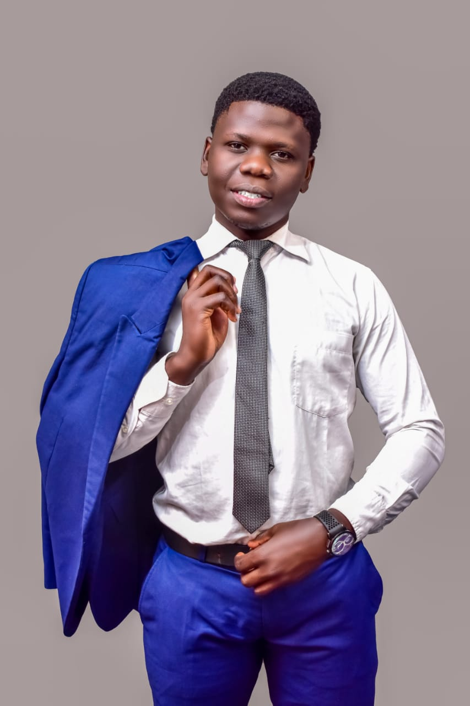

A multidisciplinary team of economists, technologists, accountants, and youth advocates united by a shared mission.

Oversees strategic planning and program architecture across NYEEI's 17 constituency networks, ensuring seamless delivery from bootcamps to micro-grant distributions.
Translates organizational goals into daily community execution, managing facilitators and ensuring high curriculum quality across all outreach centers.
Certified Public Accountant leading resource mobilization and corporate partnerships with private sector, development agencies, and state bodies.
Maintains financial stewardship, auditing compliance, and donor fund transparency to ensure every grant directly reaches youth projects.
Shapes NYEEI's brand strategy and digital storytelling, ensuring program impact reaches policymakers, partners, and media across Kenya.
Drives NYEEI's digital infrastructure and Code & Create curriculum, demystifying software engineering and digital freelancing for youth.
Champions equity across all initiatives and leads the Mama Inua program for young female entrepreneurs in Nairobi's informal settlements.
of the Young Youth Alliance and grassroots organizer mobilising youth networks across all 17 Nairobi constituencies.
Bonwise is a dedicated advocate for youth empowerment, driven by the belief that investing in young people is the surest way to transform communities. With a strong focus on practical skills development and economic independence, he has played a key role in helping youth in Nairobi launch sustainable enterprises.
Winston is a passionate advocate for youth empowerment, with a strong background in Monitoring, Evaluation and Learning (MEL). He is dedicated to helping young people achieve their full potential through data-driven insights and evidence-based strategies.
Joseph is a passionate advocate for youth empowerment, with a strong background in Research Policy and Advocacy. He is dedicated to helping young people achieve their full potential through policy and advocacy.
Raphael Lusi Oguk is a distinguished institutional builder and former Secretary General Emeritus at the Technical University of Kenya (TUK). As Founder & Former President of LCSA, he brings an extensive academic and governance network that strengthens NYEEI's institutional reach and policy advocacy.
NYEEI collaborates with government bodies, academic centers, and industry leaders to amplify impact.